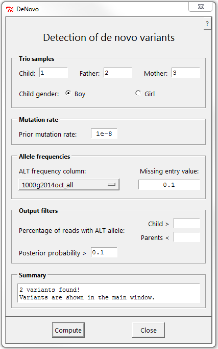

Detection of de novo variants
Description
Prerequisites
Dialog
Practical tips
Algorithm
Description
Identification of de novo variants in a trio (child + both parents). Posterior de novo probabilities are computed using a Baysian approach.
Prerequisites
To apply the de novo
algorithm in FILTUS, the following requirements should be met:
- The variants of the trio should be contained in a single file containing all three samples. Joint variant
calling is highly recommended.
- The variant file must have VCF-like genotype
columns, with the correct FORMAT column indicated in the input settings dialog.
- The FORMAT column (the one with entries like
GT:AD:DP:GQ:PL) must contain the fields GT, AD and PL, which
are all used in the algorithm.
- The variant file must be loaded with the keep 0/0 option
checked in the input
settings dialog.
NOTE: If your variant files don't meet the above requirements, there may still be hope! In many cases you can identify potential de novo variants using a
family based gene sharing with a dominant model. For instance, if all you have are individual variant files for a child and both parents,
this would be the thing to do. The downside is that you wouldn't get posterior probabilities - or any other measure of classification strength - and probably quite a few more false positives.
Dialog

To open the de novo
dialog, choose De novo
variant detection in the Analysis menu. Any
filters (e.g. PASS) should be applied before opening the dialog. The entry points of the dialog are as follows:
-
Trio samples
-
Indicate the sample numbers (corresponding to the sample
order in the Loaded
samples window in the main FILTUS area.) Alternatively,
you can use the syntax ID <string> where
<string> is a unique identifier for the sample name (as
given in the variant file). For example, if the sample name of the
child is "Trio1_child" you can write ID child. If the string is not
unique (i.e. if there are multiple loaded sample names containing
"child") you will be warned.
-
Mutation rate
-
This is used in the algorithm as the prior probability of a mutation at
a given position in a single meiosis. Default value: 1e-8. The
algorithm is usually not very sensitive to this parameter, but the
posterior probabilities will be affected if you change it radically.
-
Allele frequencies
-
Indicate a column containing frequencies for
the ALT alleles. The Missing
entry value is substituted whenever the column does not
contain a number. If your variant file does not have frequency data,
the Missing entry value
will be used for all variants. Without correct frequencies, the program
will still identify the same potential de novo variants,
but the posterior probabilities may be less accurate.
NB: For multiallelic variants, the frequency column is ignored. As a
result, any multiallelic variants detected by the de novo algorithm
gets a missing posterior probability ('-'). Since the output is sorted
on the posterior probability, these will end up at the bottom of the
list.
-
Output filters
-
The purpose of these filters is to reduce the
number of false positives in the output. A true heterozygous de novo
variant is expected to present with ALT/REF ratio close to 50% in the
child, and 0% in the parents. In practice some slack is recommended,
e.g. child > 30% and parents < 5%.
One may experiment
with these filters for other purposes too: For example, to look for de
novo mosaic variants in the child one could try a very loose cutoff for
the child, e.g. child > 10%, while requiring parents = 0%. Or
oppositely, for variants inherited from a mosaic parent, something like
parents < 25% and child > 40% would be sensible, without
resulting in too many false positives. Of course, these are merely
suggestions whose validity depend heavily on the actual
contents of the variant file (e.g. the quality of the
variants and the parameters of the variant calling).
-
Summary
-
A summary of the findings is printed here. The identified variants are shown in the main FILTUS window; to inspect them you must close the de novo dialog.
Practical tips
Tip 1:
To save the results, first close the de novo dialog, and then select Save main window content in the File menu.
Tip 2:
When browsing variants in the main FILTUS window, you can right click on any particular variant to see details about that variant for all the samples.
Algorithm
FILTUS uses the GT field of the genotype columns to recognize the following de novo genotype patterns (father + mother = child):
- Autosomal:
- 0/0 + 0/0 = 0/1
- 0/0 + 0/0 = 1/1
- 0/0 + 0/1 = 1/1
- 0/1 + 0/0 = 1/1
- X-linked, child is boy:
- X-linked, child is girl:
- 0 + 0/0 = 0/1
- 0 + 0/0 = 1/1
- 0 + 0/1 = 1/1
A variant is treated as X-linked in this context only if it is located outside of the pseudoautosomal regions PAR1 and PAR2 on the X chromosome.
Multiallelic generalizations of the above patterns are also caught.
However, combinations with any of the following properties are treated as benign and discarded from further analyses:
- The de novo allele is 0 (= REF). Example: 1/1 + 1/1 = 0/1.
- Child genotype equals either of the parents. Example: 0/0 + 1/1 = 1/1.
- Missing genotype in any trio member.
- A male trio member is reported as heterozygous for an X-linked variant.
For each variant where a de novo genotype combination is identified, FILTUS reports the posterior de novo probability. This is computed using a Bayesian formula involving the
population allele frequencies, the genotype likelihoods reported by the variant caller (in the PL fields) and the prior mutation rate specified by the user.